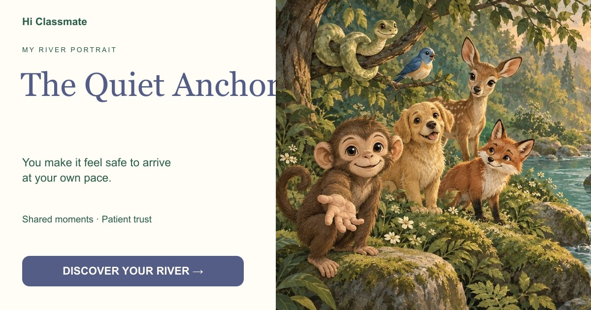

The Quiet Anchor
You make it feel safe to arrive at your own pace.

Your choices leaned toward closeness and letting things unfold. Your presence may feel reassuring because someone can stay near you without having to hurry.
Begin my crossing →